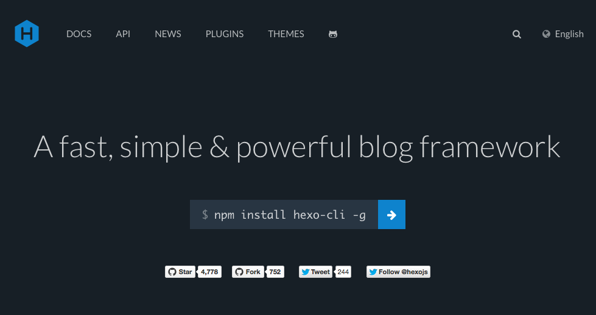

hexo とは
hexo は、node.js で作成された静的サイトジェネレータ。blog の作成に特化していてコマンド一発で gh-pages などに blog を deploy できる。

環境
手元の MacBook に hexo をインストールする。node.js は ndenv、ndenv は anyenv で。
- OS X Yosemite 10.10.3
- node 0.12.2
- hexo 3.0.1
hexo 実行環境の構築
anyanv1 2 3 4 5 6 7 8 9 10
| git clone https://github.com/riywo/anyenv ~/.anyenv cat <<'EOD'>> ~/.bash_profile if [ -x "$HOME/.anyenv/bin/anyenv" ] ; then PATH="$HOME/.anyenv/bin:$PATH" eval "$(anyenv init -)" fi EOD exec $SHELL -l
|
node1 2 3 4
| anyenv install ndenv exec $SHELL -l ndenv install v0.12.2 ndenv global v0.12.2
|
hexo1 2
| npm install hexo-cli -g ndenv rehash
|
blog の作成
blog を管理するディレクトリ「harasou.github.io」を作成し、初期設定およびテーマを変更。ローカルで動作確認を行う。
hexo init1 2 3 4
| hexo init ~/src/github.com/harasou/harasou.github.io cd $_ npm install npm install hexo-deployer-git --save
|
hexo config1 2 3 4 5 6 7 8
| hexo config title harasou.github.io hexo config author harasou hexo config language ja hexo config timezone Asia/Tokyo hexo config url http://harasou.github.io/ hexo config post_asset_folder true hexo config deploy.type git hexo config deploy.repo git@github.com:harasou/harasou.github.io.git
|
Theme を Light に変更1 2 3 4
| git clone https://github.com/hexojs/hexo-theme-light.git themes/light rm -rf themes/light/.git cp themes/light/languages/default.yml themes/light/languages/ja.yml hexo config theme light
|
ローカルで動作確認1 2
| hexo server open http://0.0.0.0:4000/
|
gh-pages で blog 公開
事前に github.com でリポジトリ「harasou.github.io」を作成しておく。
1 2
| hexo deploy --generate open http://harasou.github.com/
|
hexo をリポジトリ管理
上記hexo deploy --generateでは、静的なページが生成され該当リポジトリのmasterブランチに push される。
このため、hexo の設定（config.yml,theme 等）や markdown で記載した元記事は、別途hexoブランチで管理するようにしておく。
1 2 3 4 5 6 7
| cd ~/src/github.com/harasou/harasou.github.io git init git remote add origin git@github.com:harasou/harasou.github.io.git git checkout -b hexo git add . git commit -m "Initial commit" git push origin hexo
|